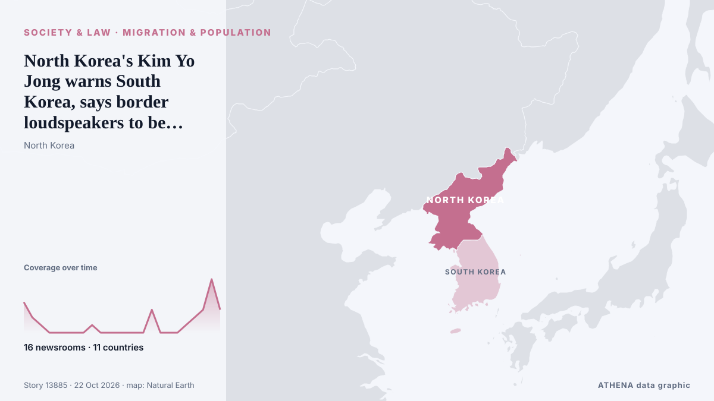

North Korea's Kim Yo Jong warns South Korea, says border loudspeakers to be ready within days

SEOUL: North Korea will place anti-South Korea loudspeakers on standby along the entire border within days and has put unspecified new countermeasures on alert, Kim Yo Jong, the powerful sister of… de Business Recorder
Informado de forma independiente por 16 medios de 11 países desde el 19 oct; el primero fue Yonhap (English); la cobertura está en su punto álgido. ATHENA califica el riesgo como moderado (3.9/10), sobre todo por la gravedad del daño descrito y el ritmo de la cobertura. La confianza es del 90 % (alta): lo corroboran 16 medios independientes, con una fiabilidad media de las fuentes del 76 %. Quién lo informó: 11 medios en Corea del Sur · South Korea, 4 medios en Corea del Norte · North Korea, 3 medios en Estados Unidos · United States. La cobertura fue de 19 oct a 22 oct, durante 70 horas.
Por qué importa: Los cambios legales y de política modifican derechos, obligaciones y servicios públicos para las personas afectadas.
Qué ha cambiado: 19 informaciones nuevas de 13 redacciones en las 24 horas hasta el 22 oct.
Los titulares se muestran en inglés, tal como se publicaron.
De un vistazo
Seleccionado, puntuado y redactado por la metodología publicada de ATHENA. Ningún editor interviene en eventos concretos. Cómo se elabora ›
| 19 Oct 09:17 UTC | 4 |
|---|---|
| 19 Oct 12:17 UTC | 2 |
| 19 Oct 15:17 UTC | 1 |
| 19 Oct 18:17 UTC | 0 |
| 19 Oct 21:17 UTC | 0 |
| 20 Oct 00:17 UTC | 0 |
| 20 Oct 03:17 UTC | 0 |
| 20 Oct 06:17 UTC | 0 |
| 20 Oct 09:17 UTC | 1 |
| 20 Oct 12:17 UTC | 0 |
| 20 Oct 15:17 UTC | 0 |
| 20 Oct 18:17 UTC | 0 |
| 20 Oct 21:17 UTC | 0 |
| 21 Oct 00:17 UTC | 0 |
| 21 Oct 03:17 UTC | 0 |
| 21 Oct 06:17 UTC | 3 |
| 21 Oct 09:17 UTC | 0 |
| 21 Oct 12:17 UTC | 0 |
| 21 Oct 15:17 UTC | 0 |
| 21 Oct 18:17 UTC | 1 |
| 21 Oct 21:17 UTC | 2 |
| 22 Oct 00:17 UTC | 3 |
| 22 Oct 03:17 UTC | 7 |
| 22 Oct 06:17 UTC | 3 |
| 19 Oct 15:54 UTC | 4.0 |
|---|---|
| 22 Oct 07:05 UTC | 4.6 |
| 22 Oct 07:06 UTC | 4.0 |
| 22 Oct 07:07 UTC | 3.9 |
Por qué estas cifras
Importancia
Riesgo
Confianza
La cobertura: quién informó y cuándo
titular tal como se publicó · abre el original- Yonhap (English) · Corea del Sur · South Korea(URGENT) N.K. leader's sister calls situation at southern border 'very unstable,' mentions resumption of loudspeaker broadcasts
- Yonhap (English) · Corea del Sur · South KoreaN.K. leader's sister calls situation at southern border 'very unstable'
- Yonhap (English) · Corea del Sur · South Korea(LEAD) N.K. leader's sister calls situation at southern border 'very unstable'
- NK News · Corea del Norte · North KoreaKim Yo Jong threatens restart of North Korean loudspeakers amid border tensions
- ABC News (International) · Estados Unidos · United StatesNorth Korea threatens to restart propaganda broadcasts, deploy more weapons at border
- PBS NewsHour · Estados Unidos · United StatesNorth Korea threatens to restart propaganda loudspeaker broadcasts and deploy more weapons at South Korea border
- Korea Herald · Corea del Sur · South KoreaKim Yo-jong threatens loudspeaker broadcast resumption, more tactical weapons along border
- NK News · Corea del Norte · North KoreaSeoul vows to ‘punish’ North Korean ‘provocations’ after loudspeaker threat
- Yonhap (English) · Corea del Sur · South Korea(LEAD) N.K. leader's sister, military marshal inspect border fortification site, warn of 'overwhelming' responses
- NK News · Corea del Norte · North KoreaKim Yo Jong says North Korea will restart loudspeakers after visiting border
- Arab Times · KuwaitNorth Korean leader's sister inspects border fortifications as tensions rise with South
- Yonhap (English) · Corea del Sur · South Korea(URGENT) N.K. leader's sister says loudspeakers against S. Korea "will be on standby" in "matter of days"
- Yonhap (English) · Corea del Sur · South KoreaN.K. leader's sister warns of 'new counter means' at border with S. Korea
- Yonhap (English) · Corea del Sur · South Korea(LEAD) N.K. leader's sister warns of border countermeasures, loudspeakers to be ready within days
- ABC News (International) · Estados Unidos · United StatesNorth Korean leader's sister inspects fortifications as tensions rise with the South
- Mainichi (English) · Japón · JapanNorth Korea says it will resume propaganda broadcasts across border into South Korea
- Yonhap (English) · Corea del Sur · South Korea(2nd LD) N.K. leader's sister warns of border countermeasures, loudspeakers to be ready within days
- Business Recorder · Pakistán · PakistanNorth Korea's Kim Yo Jong warns South Korea, says border loudspeakers to be ready within days
- The Guardian · Reino Unido · United KingdomNorth Korea prepares to restart propaganda loudspeakers as ties sour with South
- CNA (Channel NewsAsia) · Singapur · SingaporeKim Jong Un's sister issues new warning to South Korea, says border loudspeakers to be ready within days
- Al Jazeera English · Catar · QatarNorth Korea to resume propaganda broadcasts, South Korea urges dialogue
- Daily Maverick · Sudáfrica · South AfricaNorth Korea’s Kim Yo Jong warns South Korea, says border loudspeakers to be ready
- NK News · Corea del Norte · North KoreaKim Yo Jong denounces South Korean lawmaker who criticized loudspeaker plans
- Sky News (World) · Reino Unido · United KingdomNorth Korea plans to resume propaganda broadcasts along border with South Korea
- The Korea Times · Corea del Sur · South KoreaS. Korea urges NK to stop border escalation acts amid Pyongyang's loudspeaker threat
- The Korea Times · Corea del Sur · South KoreaNK leader's sister warns of border countermeasures, loudspeakers to be ready within days
- Bangkok Post — page reader · Tailandia · ThailandSeoul sees no signs of new North Korean weapons on border